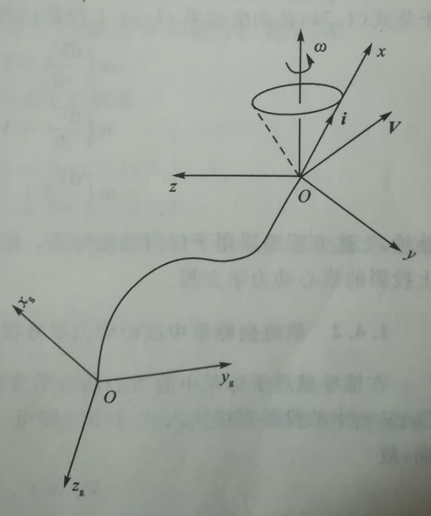
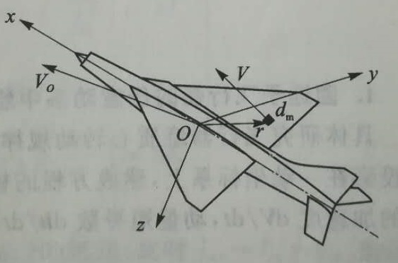

飞行仿真之刚体六自由度方程
在飞行仿真中，获取飞机的位姿是基本要求。将飞行器视为刚体，根据牛顿第二定律和动量矩定理，即可推导出飞机的质心运动方程和飞机绕质心转动的动力学方程，即刚体的六自由度方程。下面即从《航空飞行器飞行动力学》中摘抄刚体六自由度方程的推导过程。
飞行器质心运动方程
根据牛顿第二定理：
$$m\frac{dV}{dt}=F \tag{1}$$
式中$m$为飞行器质量，$V$为飞行器飞行速度矢量，$F$为作用于质心处外力的合力矢量。
具体研究飞行器质心运动规律时，工程上常建立投影正在一动坐标系的标量方程，并认为大气时静止的。
一般动坐标系中质心动力学方程
取原点位于飞行器质心的一动坐标系$Oxyz$，它相对惯性坐标系$O_gx_gy_gz_g$有一转动角速度$w$。质心的绝对速度为$V$，如图1所示。

将速度$V$和角速度$w$分别在动坐标系上投影，则有
$$V=V_xi+V_yj+V_zk \tag{2}$$
$$w=w_xi+w_yj+w_zk \tag{3}$$
式中$i,j,k$为动坐标系$Oxyz$的单位矢量。由于$w$存在，其方向将随时间变化。
将公式$(2)和(3)$带入公式$(1)$，则速度$V$的微分，即质心的绝对加速度为：
$$
\frac{F}{m}=\frac{dV}{dt}=\frac{dV_x}{dt}i+\frac{dV_y}{dt}j+\frac{dV_z}{dt}k+V_x\frac{di}{dt}+V_y\frac{dj}{dt}+V_z\frac{dk}{dt} \tag{4}
$$
式中单位矢量导数$di/dt$是矢量端点$i$的速度，此时矢端曲线是绕$w$旋转的圆，因此：
$$\frac{di}{dt}=w\times i$$
$$\frac{dj}{dt}=w\times y$$
$$\frac{dk}{dt}=w\times z$$
将上述关系代入公式$(4)$，即可知质心的绝对加速度可表示为
$$\frac{F}{m}=\frac{dV}{dt}=\frac{\delta V}{\delta t}+w \times V \tag{5}$$
其中：
$$\frac{\delta V}{\delta t}=\frac{dV_x}{dt}i+\frac{dV_y}{dt}j+\frac{dV_z}{dt}k$$
式(5)中 $\frac{\delta V}{\delta t}$ 为动系角速度 $w=0$ 时的加速度，即相当于观察者站在动坐标系中所看到的质心加速度；$w\times V$为由于存在角速度 $w$ 使 $V$ 相对于动坐标系方向发生变化而产生的加速度；$\frac{dV}{dt}$ 为质心的绝对加速度，即观察者在地面坐标系上所看到的加速度。
同样合力矢量$F$用动坐标系上投影表示为：
$$F=F_xi+F_yj+F_zk$$
于是式(5)在动坐标系$Oxyz$上投影的质心动力学标量方程如下：
$$m(\frac{dV_x}{dt}+V_zw_y-V_yw_z)=F_x$$
$$m(\frac{dV_y}{dt}+V_xw_z-V_zw_x)=F_y$$
$$m(\frac{dV_z}{dt}+V_yw_x-V_xw_y)=F_z$$
上述方程组适用于任何动坐标系。
飞行器绕质心的动力学方程
根据动量矩定理，飞行器绕质心的转动运动可表示为：
$$M=\frac{dh}{dt} \tag{6}$$
式中$h$为飞行器对坐标系原点的动量矩；$M$为作用在飞行器上的外力对原点的合力矩。

根据动量矩定义，飞行器上任意微元质量为dm，对坐标系原点的动量矩为：
$$\Delta h=r\times V dm$$
式中$r$为微元质量到坐标系原点的矢径；$V$为该微元质量的速度矢量，则
$$V=V_o+w\times r$$
式中$V_o$为坐标系原点速度（如坐标原点取为飞行器质心，则为质心速度）；$w$为坐标系转动角速度。
于是飞行器的总动量矩可积分得出
$$h=\int r\times V dm=\int r dm \times V_o +\int r \times (w \times r) dm$$
取坐标系原点为质心时，有
$$\int r dm=0$$
飞行器动量矩简化为
$$h=\int r \times (w\times r) dm \tag{7}$$
上式表明，飞行器的动量矩只取决于转动产生的速度部分，而与质心运动速度$V_o$无关。矢径$r$和角速度$w$用坐标系中投影分量表示为：
$$r=xi+yj+zk$$
$$w=w_xi+w_yj+w_zk$$
将上述关系式代入式$(7)$，经整理得：
$$h_x=w_xI_x-w_yI_{xy}-w_zI_{zx}$$
$$h_y=w_yI_y-w_xI_{xy}-w_zI_{yz}$$
$$h_z=w_zI_z-w_xI_{zx}-w_yI_{yz}$$
式中$I_x$,$I_y$,$I_z$分别为飞行器对$O_x$轴,$O_y$轴,$O_z$轴地惯性矩，分别为：
$$I_x=\int (y^2+z^2) dm$$
$$I_y=\int (x^2+z^2) dm$$
$$I_z=\int (x^2+y^2) dm$$
而$I_{xy}$, $I_{yz}$, $I_{zx}$ 则为对 $O_x$ 轴与 $O_y$ 轴，$O_y$ 轴与 $O_z$ 轴，$O_z$ 轴与 $O_x$ 轴的惯性积，分别为：
$$I_{xy}=\int xy dm$$
$$I_{yz}=\int yz dm$$
$$I_{zx}=\int zx dm$$
一般动坐标系中绕质心转动动力学方程
具体研究飞行器绕质心转动规律时，矢量形式的式$(6)$使用不便。工程习惯上将其投影在一动坐标系上建成方程的标量形式。此时动坐标系在空中以$w$转动，类同于加速度$\frac{dV}{dt}$，动量矩可以表示为：
$$M=\frac{dh}{dt}=\frac{\delta h}{\delta t}+w\times h$$
类似一般动坐标系中质心动力学方程的推导，最终可得转动运动方程的标量形式为：
$$\frac{dh_x}{dt}+h_zw_y-h_yw_z=M_x$$
$$\frac{dh_y}{dt}+h_xw_z-h_zw_x=M_y$$
$$\frac{dh_z}{dt}+h_yw_x-h_xw_y=M_z$$
参考文献
- 方振平,陈万春,张曙光. 航空飞行器飞行动力学[M]. 2015.
- 旋转变换（一）旋转矩阵,by csxiaoshui.
- 飞行仿真–3.刚体六自由度方程、变换矩阵与四元数,by WFYX.
- 判断三维坐标系旋转正方向的简单方法,by Wonderffee.
- （番外）姿态与旋转矩阵（I）,by Tam Alex.
- 一点关于机器人学和计算机视觉中的坐标变换的理解,by Kissrabbit.
- 飞机是怎么飞起来的,by J Pan.
- 如何获得飞机运动方程,by J Pan.
- 【自动控制原理】1.传递函数,by 李寒潭.
- 空空导弹尾部的齿轮有什么用？,by 不沉俾斯麦.
- 导弹制导原理第4章,by 张庆振.
- 飞行原理术语解析,by 刘斯宁.
- 空气动力学术语解析,by 刘斯宁.